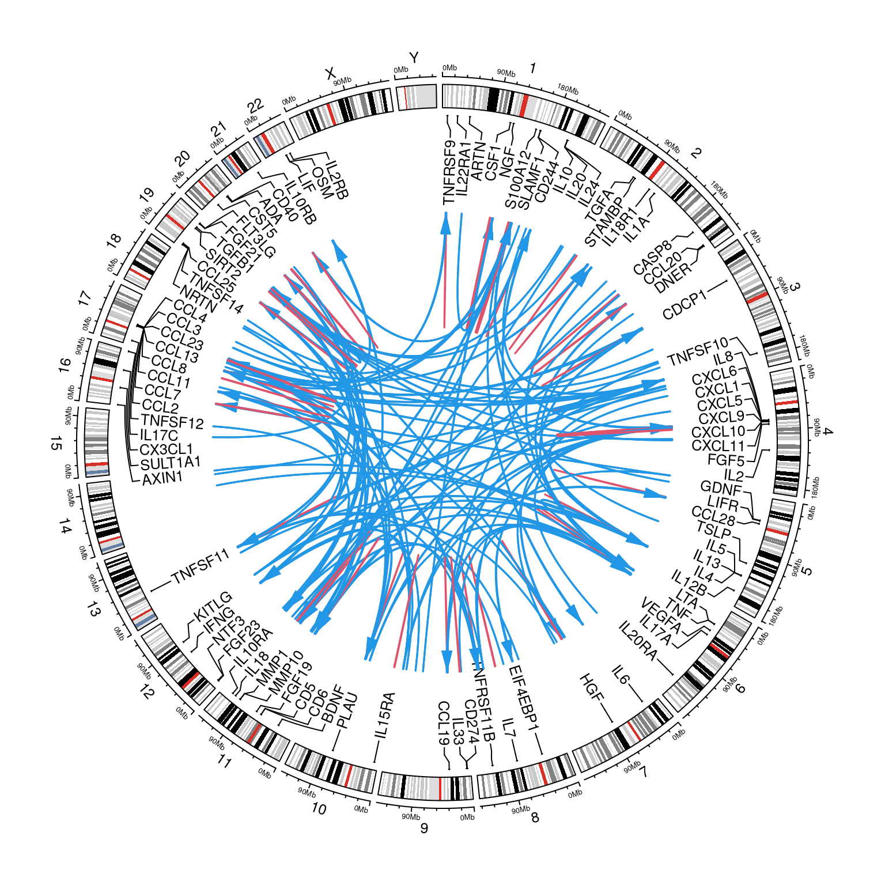
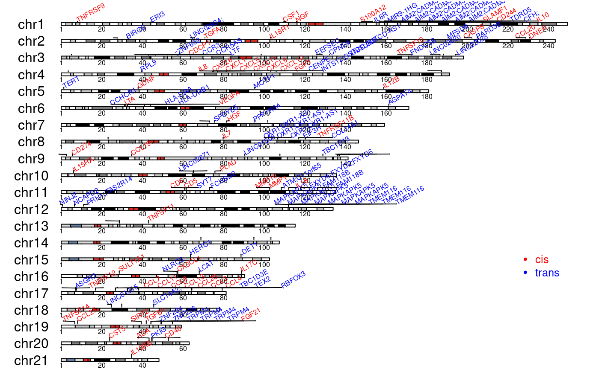
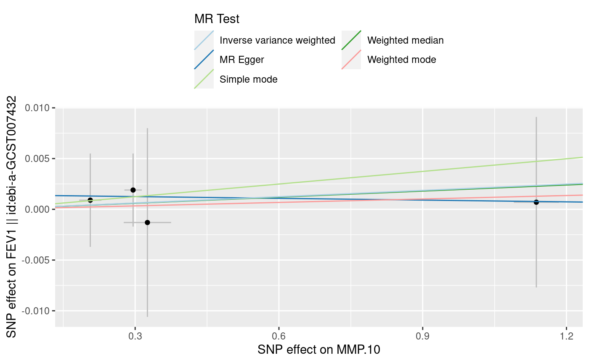
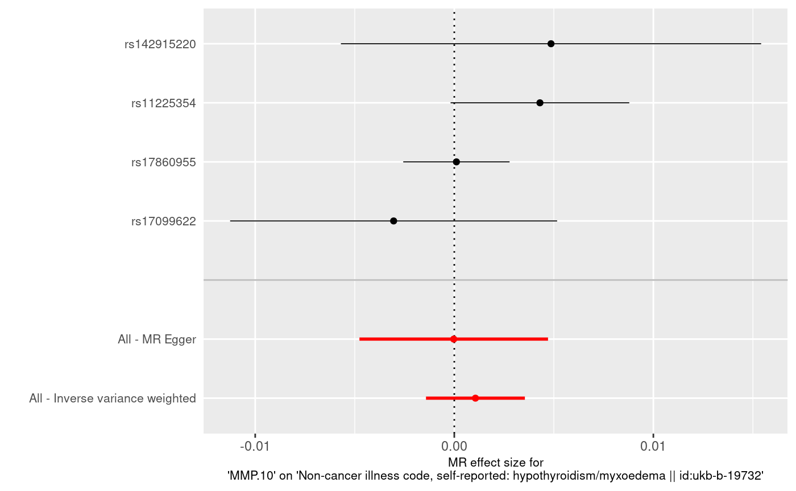
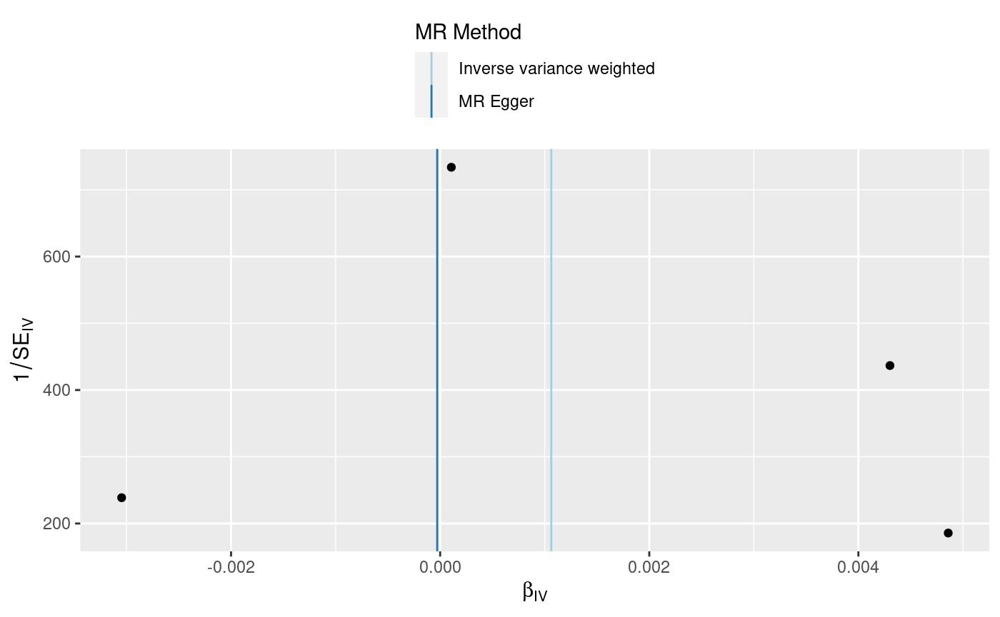
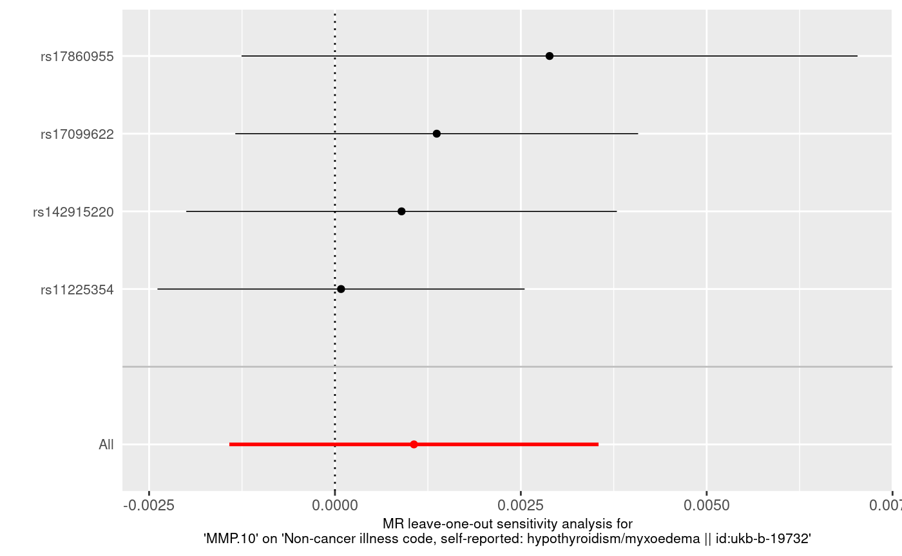

cis/trans classification
options(width=200)
require(gap)
#> Loading required package: gap
#> gap version 1.2.3-2
INF <- Sys.getenv("INF")
f <- file.path(INF,"work","INF1.merge")
clumped <- read.delim(f,as.is=TRUE)
hits <- merge(clumped[c("CHR","POS","MarkerName","prot","log10p")],
inf1[c("prot","uniprot")],by="prot")
names(hits) <- c("prot","Chr","bp","SNP","log10p","uniprot")
cistrans <- cis.vs.trans.classification(hits,inf1,"uniprot")
cis.vs.trans <- with(cistrans,data)
with(cistrans,table)
#> cis trans total
#> ADA 1 0 1
#> CASP8 1 0 1
#> CCL11 1 4 5
#> CCL13 1 3 4
#> CCL19 1 3 4
#> CCL2 0 3 3
#> CCL20 1 1 2
#> CCL23 1 0 1
#> CCL25 1 3 4
#> CCL3 1 1 2
#> CCL4 1 1 2
#> CCL7 1 2 3
#> CCL8 1 1 2
#> CD244 1 2 3
#> CD274 1 0 1
#> CD40 1 0 1
#> CD5 1 2 3
#> CD6 1 1 2
#> CDCP1 1 2 3
#> CSF1 1 0 1
#> CST5 1 3 4
#> CX3CL1 1 2 3
#> CXCL1 1 0 1
#> CXCL10 1 1 2
#> CXCL11 1 3 4
#> CXCL5 1 3 4
#> CXCL6 1 1 2
#> CXCL9 1 2 3
#> DNER 1 0 1
#> EIF4EBP1 0 1 1
#> FGF19 0 3 3
#> FGF21 1 2 3
#> FGF23 0 2 2
#> FGF5 1 0 1
#> FLT3LG 0 6 6
#> GDNF 1 0 1
#> HGF 1 1 2
#> IL10 1 2 3
#> IL10RB 1 1 2
#> IL12B 1 7 8
#> IL15RA 1 0 1
#> IL17C 1 0 1
#> IL18 1 1 2
#> IL18R1 1 1 2
#> IL1A 0 1 1
#> IL6 0 1 1
#> IL7 1 0 1
#> IL8 1 0 1
#> KITLG 0 7 7
#> LIFR 0 1 1
#> LTA 1 2 3
#> MMP1 1 2 3
#> MMP10 1 1 2
#> NGF 1 1 2
#> NTF3 0 1 1
#> OSM 0 2 2
#> PLAU 1 5 6
#> S100A12 1 0 1
#> SIRT2 1 0 1
#> SLAMF1 1 4 5
#> SULT1A1 1 1 2
#> TGFA 1 0 1
#> TGFB1 1 0 1
#> TNFRSF11B 1 1 2
#> TNFRSF9 1 1 2
#> TNFSF10 1 7 8
#> TNFSF11 1 5 6
#> TNFSF12 1 4 5
#> TNFSF14 1 0 1
#> VEGFA 1 3 4
#> total 59 121 180
with(cistrans,total)
#> [1] 180
circos.cis.vs.trans.plot(hits=f,inf1,"uniprot") This is used to generate 2d-Manhattan plot
INF <- Sys.getenv("INF")
d <- read.csv(file.path(INF,"work","INF1.merge.cis.vs.trans"),as.is=TRUE)
t2d <- mhtplot2d(d) and ideogram
INF <- Sys.getenv("INF")
INF1_merge <- read.delim(file.path(INF,"work","INF1.merge"))[c("Chrom","Start","End","prot","MarkerName")]
singletons <- with(INF1_merge,End-Start==1)
INF1_merge[singletons,"Start"] <- INF1_merge[singletons,"Start"] - 1e6
INF1_merge[singletons,"End"] <- INF1_merge[singletons,"End"] + 1e6
small <- with(INF1_merge, Start<0)
INF1_merge[small,"Start"] <- 0
cvt <- read.csv(file.path(INF,"work","/INF1.merge.cis.vs.trans"),as.is=TRUE)
INF1_merge_cvt <- merge(INF1_merge,cvt,by.x=c("prot","MarkerName"),by.y=c("prot","SNP"))
ord <- with(INF1_merge_cvt,order(Chr,bp))
INF1_merge_cvt <- INF1_merge_cvt[ord,]
library(httr)
set_config(config(ssl_verifypeer = 0L))
library(biomaRt)
library(regioneR)
#> Loading required package: GenomicRanges
#> Loading required package: stats4
#> Loading required package: BiocGenerics
#> Loading required package: parallel
#>
#> Attaching package: 'BiocGenerics'
#> The following objects are masked from 'package:parallel':
#>
#> clusterApply, clusterApplyLB, clusterCall, clusterEvalQ, clusterExport, clusterMap, parApply, parCapply, parLapply, parLapplyLB, parRapply, parSapply, parSapplyLB
#> The following objects are masked from 'package:stats':
#>
#> IQR, mad, sd, var, xtabs
#> The following objects are masked from 'package:base':
#>
#> anyDuplicated, append, as.data.frame, basename, cbind, colnames, dirname, do.call, duplicated, eval, evalq, Filter, Find, get, grep, grepl, intersect, is.unsorted, lapply,
#> Map, mapply, match, mget, order, paste, pmax, pmax.int, pmin, pmin.int, Position, rank, rbind, Reduce, rownames, sapply, setdiff, sort, table, tapply, union, unique, unsplit,
#> which, which.max, which.min
#> Loading required package: S4Vectors
#>
#> Attaching package: 'S4Vectors'
#> The following object is masked from 'package:base':
#>
#> expand.grid
#> Loading required package: IRanges
#> Loading required package: GenomeInfoDb
mart <- useMart(biomart = "ensembl", dataset = "hsapiens_gene_ensembl")
bm <- with(INF1_merge_cvt, getBM(attributes = c("hgnc_symbol", "chromosome_name", "start_position", "end_position", "band"),
filters="chromosomal_region", values=paste0(Chr,":",bp,":",bp), mart=mart))
genes <- with(bm,toGRanges(chromosome_name,start_position,end_position,labels=hgnc_symbol))
library(karyoploteR)
attach(INF1_merge_cvt)
sentinels <- toGRanges(Chr,bp-1,bp,labels=p.gene)
cis.regions <- toGRanges(Chr,cis.start,cis.end)
loci <- toGRanges(Chr,Start,End)
panel <- toGRanges(p.chr,p.start,p.end,labels=p.gene)
colors <- c("red","blue")
seqlevelsStyle(sentinels) <- "UCSC"
kp <- plotKaryotype(genome="hg19",chromosomes=levels(seqnames(sentinels)))
kpAddBaseNumbers(kp)
kpPlotRegions(kp,data=loci,r0=0.05,r1=0.15,border="black")
kpPlotMarkers(kp, data=sentinels, labels=p.gene, text.orientation="vertical",
cex=0.45, y=0.3*seq_along(p.gene)/length(p.gene), srt=30, ignore.chromosome.ends=TRUE,
adjust.label.position=TRUE, label.color=colors[2-cis], label.dist=0.002,
cex.axis=3, cex.lab=3)
legend("bottomright", bty="n", pch=c(19,19), col=colors, pt.cex=0.4, legend=c("cis", "trans"), text.col=colors, cex=0.8, horiz=FALSE)
# kpPlotLinks(kp, data=loci, data2=panel, col=colors[2-cis])
detach(INF1_merge_cvt)eQTL Catalogue for colocalization analysis
See example associated with import_eQTLCatalogue. A related function is import_OpenGWAS used to fetch data from OpenGWAS.
library(pQTLtools)
#>
#> Attaching package: 'pQTLtools'
#> The following object is masked from 'package:gap':
#>
#> inf1
f <- file.path(path.package("pQTLtools"),"eQTL-Catalogue","hg19ToHg38.over.chain")
chain <- rtracklayer::import.chain(f)
invisible(lapply(c("dplyr", "ggplot2", "readr", "coloc", "GenomicRanges","seqminer"), require, character.only = TRUE))
#> Loading required package: dplyr
#>
#> Attaching package: 'dplyr'
#> The following objects are masked from 'package:GenomicRanges':
#>
#> intersect, setdiff, union
#> The following object is masked from 'package:GenomeInfoDb':
#>
#> intersect
#> The following objects are masked from 'package:IRanges':
#>
#> collapse, desc, intersect, setdiff, slice, union
#> The following objects are masked from 'package:S4Vectors':
#>
#> first, intersect, rename, setdiff, setequal, union
#> The following objects are masked from 'package:BiocGenerics':
#>
#> combine, intersect, setdiff, union
#> The following object is masked from 'package:biomaRt':
#>
#> select
#> The following objects are masked from 'package:stats':
#>
#> filter, lag
#> The following objects are masked from 'package:base':
#>
#> intersect, setdiff, setequal, union
#> Loading required package: ggplot2
#> Loading required package: readr
#> Loading required package: coloc
#> Loading required package: seqminer
HPC_WORK <- Sys.getenv("HPC_WORK")
gwasvcf::set_bcftools(file.path(HPC_WORK,"bin","bcftools"))
f <- file.path(path.package("pQTLtools"),"eQTL-Catalogue","tabix_ftp_paths.tsv")
tabix_paths <- read.delim(f, sep = "\t", header = TRUE, stringsAsFactors = FALSE) %>% dplyr::as_tibble()
HOME <- Sys.getenv("HOME")
f <- file.path(path.package("pQTLtools"),"eQTL-Catalogue","tabix_ftp_paths_imported.tsv")
imported_tabix_paths <- within(read.delim(f, sep = "\t", header = TRUE, stringsAsFactors = FALSE) %>% dplyr::as_tibble(),
{ftp_path <- gsub("ftp://ftp.ebi.ac.uk/pub/databases/spot/eQTL/csv/GTEx_V8/ge",
paste0(HOME,"/rds/public_databases/GTEx/csv"),ftp_path)})
INF <- Sys.getenv("INF")
M <- 1e6
sentinels <- subset(read.csv(file.path(INF,"work","INF1.merge.cis.vs.trans")),cis)
liftRegion <- function(x,chain)
{
require(GenomicRanges)
gr <- with(x,GenomicRanges::GRanges(seqnames=chr,IRanges::IRanges(start,end)))
seqlevelsStyle(gr) <- "UCSC"
gr38 <- rtracklayer::liftOver(gr, chain)
chr <- colnames(table(seqnames(gr38)))
chr <- gsub("chr","",chr)
start <- min(unlist(start(gr38)))
end <- max(unlist(end(gr38)))
invisible(list(chr=chr,start=start,end=end,region=paste0(chr,":",start,"-",end)))
}
coloc_sumstats <- function(prot,chr,region37)
{
cat("GWAS sumstats\n")
gwas_stats <- gwasvcf::query_gwas(file.path(INF,"METAL/gwas2vcf",paste0(prot,".vcf.gz")), chrompos = region37)
gwas_stats <- gwasvcf::vcf_to_granges(gwas_stats) %>% keepSeqlevels(chr) %>% renameSeqlevels(paste0("chr",chr))
gwas_stats_hg38 <- rtracklayer::liftOver(gwas_stats, chain) %>%
unlist() %>%
renameSeqlevels(chr) %>%
dplyr::as_tibble() %>%
dplyr::transmute(chromosome = seqnames, position = start, AF, ES, SE, LP, SS) %>%
dplyr::mutate(id = paste(chromosome, position, sep = ":")) %>%
dplyr::mutate(MAF = pmin(AF, 1-AF)) %>%
dplyr::group_by(id) %>%
dplyr::mutate(row_count = n()) %>%
dplyr::ungroup() %>%
dplyr::filter(row_count == 1)
ggplot(gwas_stats_hg38, aes(x = position, y = LP)) + geom_point()
gwas_stats_hg38
}
coloc_c <- function(gwas_stats_hg38,ensGene,region38)
{
cat("c. GTEx_v8 imported eQTL datasets\n")
rnaseq_df <- dplyr::filter(imported_tabix_paths, quant_method == "ge") %>% dplyr::mutate(qtl_id = paste(study, qtl_group, sep = "_"))
ftp_path_list <- setNames(as.list(rnaseq_df$ftp_path), rnaseq_df$qtl_id)
hdr <- file.path(path.package("pQTLtools"),"eQTL-Catalogue","column_names.GTEx")
column_names <- names(read.delim(hdr))
safe_import <- purrr::safely(import_eQTLCatalogue)
summary_list <- purrr::map(ftp_path_list, ~safe_import(., region38, selected_gene_id = ensGene, column_names))
result_list <- purrr::map(summary_list, ~.$result)
result_list <- result_list[!unlist(purrr::map(result_list, is.null))]
result_filtered <- purrr::map(result_list[lapply(result_list,nrow)!=0], ~dplyr::filter(., !is.na(se)))
coloc_df_imported <- purrr::map_df(result_filtered, ~run_coloc(., gwas_stats_hg38), .id = "qtl_id")
}
mixed_coloc <- function(prot,chr,ensGene,chain,region37,region38,out)
{
gwas_stats_hg38 <- coloc_sumstats(prot,chr,region37)
coloc_df_imported <- coloc_c(gwas_stats_hg38,ensGene,region38)
if (exists("coloc_df_imported"))
{
saveRDS(coloc_df_imported,file=paste0(out,".RDS"))
dplyr::arrange(coloc_df_imported, -PP.H4.abf)
ggplot(coloc_df_imported, aes(x = PP.H4.abf)) + geom_histogram()
}
}
single_run <- function(r)
{
sentinel <- sentinels[r,]
isnpid <- within(gap::inv_chr_pos_a1_a2(sentinel[["SNP"]]),
{
chr <- gsub("chr","",chr)
pos <- as.integer(pos)
start <- pos-M
if (start<0) start <- 0
end <- pos+M
})
chr <- with(isnpid,chr)
region37 <- with(isnpid, paste0(chr,":",start,"-",end))
ensRegion37 <- with(subset(inf1,prot==sentinel[["prot"]]),paste0(chr,":",start,"-",end))
region38 <- with(liftRegion(isnpid,chain),region)
ensGene <- subset(inf1,prot==sentinel[["prot"]])[["ensembl_gene_id"]]
ensRegion38 <- with(liftRegion(subset(inf1,prot==sentinel[["prot"]]),chain),region)
f <- file.path(INF,"coloc",with(sentinel,paste0(prot,"-",SNP)))
cat(chr,region37,region38,ensGene,ensRegion37,ensRegion38,"\n")
mixed_coloc(sentinel[["prot"]],chr,ensGene,chain,region37,region38,f)
}
single_run(1)
#> 8 8:119081031-121081031 8:118068792-120068792 ENSG00000164761 8:119935796-119964439 8:118923557-118952200
#> GWAS sumstats
#> c. GTEx_v8 imported eQTL datasets
#> [1] "/home/jhz22/rds/public_databases/GTEx/csv/Adipose_Subcutaneous.tsv.gz"
#> [1] "/home/jhz22/rds/public_databases/GTEx/csv/Adipose_Visceral_Omentum.tsv.gz"
#> [1] "/home/jhz22/rds/public_databases/GTEx/csv/Adrenal_Gland.tsv.gz"
#> [1] "/home/jhz22/rds/public_databases/GTEx/csv/Artery_Aorta.tsv.gz"
#> [1] "/home/jhz22/rds/public_databases/GTEx/csv/Artery_Coronary.tsv.gz"
#> [1] "/home/jhz22/rds/public_databases/GTEx/csv/Artery_Tibial.tsv.gz"
#> [1] "/home/jhz22/rds/public_databases/GTEx/csv/Brain_Amygdala.tsv.gz"
#> [1] "/home/jhz22/rds/public_databases/GTEx/csv/Brain_Anterior_cingulate_cortex_BA24.tsv.gz"
#> [1] "/home/jhz22/rds/public_databases/GTEx/csv/Brain_Caudate_basal_ganglia.tsv.gz"
#> [1] "/home/jhz22/rds/public_databases/GTEx/csv/Brain_Cerebellar_Hemisphere.tsv.gz"
#> [1] "/home/jhz22/rds/public_databases/GTEx/csv/Brain_Cerebellum.tsv.gz"
#> [1] "/home/jhz22/rds/public_databases/GTEx/csv/Brain_Cortex.tsv.gz"
#> [1] "/home/jhz22/rds/public_databases/GTEx/csv/Brain_Frontal_Cortex_BA9.tsv.gz"
#> [1] "/home/jhz22/rds/public_databases/GTEx/csv/Brain_Hippocampus.tsv.gz"
#> [1] "/home/jhz22/rds/public_databases/GTEx/csv/Brain_Hypothalamus.tsv.gz"
#> [1] "/home/jhz22/rds/public_databases/GTEx/csv/Brain_Nucleus_accumbens_basal_ganglia.tsv.gz"
#> [1] "/home/jhz22/rds/public_databases/GTEx/csv/Brain_Putamen_basal_ganglia.tsv.gz"
#> [1] "/home/jhz22/rds/public_databases/GTEx/csv/Brain_Spinal_cord_cervical_c-1.tsv.gz"
#> [1] "/home/jhz22/rds/public_databases/GTEx/csv/Brain_Substantia_nigra.tsv.gz"
#> [1] "/home/jhz22/rds/public_databases/GTEx/csv/Breast_Mammary_Tissue.tsv.gz"
#> [1] "/home/jhz22/rds/public_databases/GTEx/csv/Cells_Cultured_fibroblasts.tsv.gz"
#> [1] "/home/jhz22/rds/public_databases/GTEx/csv/Cells_EBV-transformed_lymphocytes.tsv.gz"
#> [1] "/home/jhz22/rds/public_databases/GTEx/csv/Colon_Sigmoid.tsv.gz"
#> [1] "/home/jhz22/rds/public_databases/GTEx/csv/Colon_Transverse.tsv.gz"
#> [1] "/home/jhz22/rds/public_databases/GTEx/csv/Esophagus_Gastroesophageal_Junction.tsv.gz"
#> [1] "/home/jhz22/rds/public_databases/GTEx/csv/Esophagus_Mucosa.tsv.gz"
#> [1] "/home/jhz22/rds/public_databases/GTEx/csv/Esophagus_Muscularis.tsv.gz"
#> [1] "/home/jhz22/rds/public_databases/GTEx/csv/Heart_Atrial_Appendage.tsv.gz"
#> [1] "/home/jhz22/rds/public_databases/GTEx/csv/Heart_Left_Ventricle.tsv.gz"
#> [1] "/home/jhz22/rds/public_databases/GTEx/csv/Kidney_Cortex.tsv.gz"
#> [1] "/home/jhz22/rds/public_databases/GTEx/csv/Liver.tsv.gz"
#> [1] "/home/jhz22/rds/public_databases/GTEx/csv/Lung.tsv.gz"
#> [1] "/home/jhz22/rds/public_databases/GTEx/csv/Minor_Salivary_Gland.tsv.gz"
#> [1] "/home/jhz22/rds/public_databases/GTEx/csv/Muscle_Skeletal.tsv.gz"
#> [1] "/home/jhz22/rds/public_databases/GTEx/csv/Nerve_Tibial.tsv.gz"
#> [1] "/home/jhz22/rds/public_databases/GTEx/csv/Ovary.tsv.gz"
#> [1] "/home/jhz22/rds/public_databases/GTEx/csv/Pancreas.tsv.gz"
#> [1] "/home/jhz22/rds/public_databases/GTEx/csv/Pituitary.tsv.gz"
#> [1] "/home/jhz22/rds/public_databases/GTEx/csv/Prostate.tsv.gz"
#> [1] "/home/jhz22/rds/public_databases/GTEx/csv/Skin_Not_Sun_Exposed_Suprapubic.tsv.gz"
#> [1] "/home/jhz22/rds/public_databases/GTEx/csv/Skin_Sun_Exposed_Lower_leg.tsv.gz"
#> [1] "/home/jhz22/rds/public_databases/GTEx/csv/Small_Intestine_Terminal_Ileum.tsv.gz"
#> [1] "/home/jhz22/rds/public_databases/GTEx/csv/Spleen.tsv.gz"
#> [1] "/home/jhz22/rds/public_databases/GTEx/csv/Stomach.tsv.gz"
#> [1] "/home/jhz22/rds/public_databases/GTEx/csv/Testis.tsv.gz"
#> [1] "/home/jhz22/rds/public_databases/GTEx/csv/Thyroid.tsv.gz"
#> [1] "/home/jhz22/rds/public_databases/GTEx/csv/Uterus.tsv.gz"
#> [1] "/home/jhz22/rds/public_databases/GTEx/csv/Vagina.tsv.gz"
#> [1] "/home/jhz22/rds/public_databases/GTEx/csv/Whole_Blood.tsv.gz"
#> PP.H0.abf PP.H1.abf PP.H2.abf PP.H3.abf PP.H4.abf
#> 2.43e-49 6.57e-44 3.69e-06 1.00e+00 1.66e-07
#> [1] "PP abf for shared variant: 1.66e-05%"
#> PP.H0.abf PP.H1.abf PP.H2.abf PP.H3.abf PP.H4.abf
#> 5.76e-45 5.97e-44 8.77e-02 9.09e-01 3.64e-03
#> [1] "PP abf for shared variant: 0.364%"
#> PP.H0.abf PP.H1.abf PP.H2.abf PP.H3.abf PP.H4.abf
#> 3.02e-44 2.38e-44 4.59e-01 3.62e-01 1.79e-01
#> [1] "PP abf for shared variant: 17.9%"
#> PP.H0.abf PP.H1.abf PP.H2.abf PP.H3.abf PP.H4.abf
#> 3.91e-44 2.49e-44 5.95e-01 3.79e-01 2.56e-02
#> [1] "PP abf for shared variant: 2.56%"
#> PP.H0.abf PP.H1.abf PP.H2.abf PP.H3.abf PP.H4.abf
#> 3.18e-44 3.14e-44 4.84e-01 4.78e-01 3.73e-02
#> [1] "PP abf for shared variant: 3.73%"
#> PP.H0.abf PP.H1.abf PP.H2.abf PP.H3.abf PP.H4.abf
#> 3.91e-44 2.20e-44 5.94e-01 3.34e-01 7.17e-02
#> [1] "PP abf for shared variant: 7.17%"
#> PP.H0.abf PP.H1.abf PP.H2.abf PP.H3.abf PP.H4.abf
#> 3.69e-44 2.37e-44 5.61e-01 3.60e-01 7.92e-02
#> [1] "PP abf for shared variant: 7.92%"
#> PP.H0.abf PP.H1.abf PP.H2.abf PP.H3.abf PP.H4.abf
#> 3.48e-44 2.85e-44 5.29e-01 4.33e-01 3.75e-02
#> [1] "PP abf for shared variant: 3.75%"
#> PP.H0.abf PP.H1.abf PP.H2.abf PP.H3.abf PP.H4.abf
#> 3.69e-44 2.66e-44 5.62e-01 4.05e-01 3.26e-02
#> [1] "PP abf for shared variant: 3.26%"
#> PP.H0.abf PP.H1.abf PP.H2.abf PP.H3.abf PP.H4.abf
#> 3.58e-44 2.72e-44 5.44e-01 4.13e-01 4.22e-02
#> [1] "PP abf for shared variant: 4.22%"
#> PP.H0.abf PP.H1.abf PP.H2.abf PP.H3.abf PP.H4.abf
#> 3.58e-44 2.48e-44 5.45e-01 3.77e-01 7.79e-02
#> [1] "PP abf for shared variant: 7.79%"
#> PP.H0.abf PP.H1.abf PP.H2.abf PP.H3.abf PP.H4.abf
#> 3.14e-44 3.07e-44 4.78e-01 4.67e-01 5.41e-02
#> [1] "PP abf for shared variant: 5.41%"
#> PP.H0.abf PP.H1.abf PP.H2.abf PP.H3.abf PP.H4.abf
#> 3.13e-44 3.12e-44 4.77e-01 4.75e-01 4.85e-02
#> [1] "PP abf for shared variant: 4.85%"
#> PP.H0.abf PP.H1.abf PP.H2.abf PP.H3.abf PP.H4.abf
#> 3.62e-44 2.27e-44 5.51e-01 3.45e-01 1.05e-01
#> [1] "PP abf for shared variant: 10.5%"
#> PP.H0.abf PP.H1.abf PP.H2.abf PP.H3.abf PP.H4.abf
#> 3.30e-44 2.96e-44 5.03e-01 4.50e-01 4.74e-02
#> [1] "PP abf for shared variant: 4.74%"
#> PP.H0.abf PP.H1.abf PP.H2.abf PP.H3.abf PP.H4.abf
#> 3.70e-44 2.47e-44 5.63e-01 3.76e-01 6.07e-02
#> [1] "PP abf for shared variant: 6.07%"
#> PP.H0.abf PP.H1.abf PP.H2.abf PP.H3.abf PP.H4.abf
#> 3.79e-44 2.50e-44 5.77e-01 3.81e-01 4.22e-02
#> [1] "PP abf for shared variant: 4.22%"
#> PP.H0.abf PP.H1.abf PP.H2.abf PP.H3.abf PP.H4.abf
#> 3.73e-44 2.54e-44 5.67e-01 3.86e-01 4.68e-02
#> [1] "PP abf for shared variant: 4.68%"
#> PP.H0.abf PP.H1.abf PP.H2.abf PP.H3.abf PP.H4.abf
#> 3.81e-44 2.51e-44 5.80e-01 3.82e-01 3.88e-02
#> [1] "PP abf for shared variant: 3.88%"
#> PP.H0.abf PP.H1.abf PP.H2.abf PP.H3.abf PP.H4.abf
#> 3.62e-44 2.77e-44 5.51e-01 4.21e-01 2.74e-02
#> [1] "PP abf for shared variant: 2.74%"
#> PP.H0.abf PP.H1.abf PP.H2.abf PP.H3.abf PP.H4.abf
#> 5.04e-55 6.57e-44 7.67e-12 1.00e+00 3.72e-13
#> [1] "PP abf for shared variant: 3.72e-11%"
#> PP.H0.abf PP.H1.abf PP.H2.abf PP.H3.abf PP.H4.abf
#> 3.18e-44 3.19e-44 4.84e-01 4.85e-01 3.11e-02
#> [1] "PP abf for shared variant: 3.11%"
#> PP.H0.abf PP.H1.abf PP.H2.abf PP.H3.abf PP.H4.abf
#> 3.45e-44 2.87e-44 5.25e-01 4.37e-01 3.84e-02
#> [1] "PP abf for shared variant: 3.84%"
#> PP.H0.abf PP.H1.abf PP.H2.abf PP.H3.abf PP.H4.abf
#> 4.94e-46 6.52e-44 7.51e-03 9.92e-01 3.49e-04
#> [1] "PP abf for shared variant: 0.0349%"
#> PP.H0.abf PP.H1.abf PP.H2.abf PP.H3.abf PP.H4.abf
#> 3.80e-44 2.60e-44 5.78e-01 3.95e-01 2.72e-02
#> [1] "PP abf for shared variant: 2.72%"
#> PP.H0.abf PP.H1.abf PP.H2.abf PP.H3.abf PP.H4.abf
#> 2.41e-44 4.05e-44 3.67e-01 6.16e-01 1.71e-02
#> [1] "PP abf for shared variant: 1.71%"
#> PP.H0.abf PP.H1.abf PP.H2.abf PP.H3.abf PP.H4.abf
#> 7.06e-46 6.43e-44 1.07e-02 9.79e-01 1.05e-02
#> [1] "PP abf for shared variant: 1.05%"
#> PP.H0.abf PP.H1.abf PP.H2.abf PP.H3.abf PP.H4.abf
#> 3.32e-47 6.57e-44 5.05e-04 9.99e-01 2.32e-05
#> [1] "PP abf for shared variant: 0.00232%"
#> PP.H0.abf PP.H1.abf PP.H2.abf PP.H3.abf PP.H4.abf
#> 1.62e-45 6.40e-44 2.47e-02 9.74e-01 1.19e-03
#> [1] "PP abf for shared variant: 0.119%"
#> PP.H0.abf PP.H1.abf PP.H2.abf PP.H3.abf PP.H4.abf
#> 3.51e-44 2.76e-44 5.35e-01 4.21e-01 4.49e-02
#> [1] "PP abf for shared variant: 4.49%"
#> PP.H0.abf PP.H1.abf PP.H2.abf PP.H3.abf PP.H4.abf
#> 3.08e-44 3.12e-44 4.68e-01 4.74e-01 5.78e-02
#> [1] "PP abf for shared variant: 5.78%"
#> PP.H0.abf PP.H1.abf PP.H2.abf PP.H3.abf PP.H4.abf
#> 6.83e-46 6.50e-44 1.04e-02 9.89e-01 1.04e-03
#> [1] "PP abf for shared variant: 0.104%"
#> PP.H0.abf PP.H1.abf PP.H2.abf PP.H3.abf PP.H4.abf
#> 3.78e-44 2.42e-44 5.75e-01 3.68e-01 5.76e-02
#> [1] "PP abf for shared variant: 5.76%"
#> PP.H0.abf PP.H1.abf PP.H2.abf PP.H3.abf PP.H4.abf
#> 4.02e-44 2.40e-44 6.12e-01 3.66e-01 2.24e-02
#> [1] "PP abf for shared variant: 2.24%"
#> PP.H0.abf PP.H1.abf PP.H2.abf PP.H3.abf PP.H4.abf
#> 1.22e-44 5.30e-44 1.86e-01 8.06e-01 7.92e-03
#> [1] "PP abf for shared variant: 0.792%"
#> PP.H0.abf PP.H1.abf PP.H2.abf PP.H3.abf PP.H4.abf
#> 3.61e-44 2.72e-44 5.50e-01 4.13e-01 3.69e-02
#> [1] "PP abf for shared variant: 3.69%"
#> PP.H0.abf PP.H1.abf PP.H2.abf PP.H3.abf PP.H4.abf
#> 1.24e-45 6.44e-44 1.89e-02 9.80e-01 9.57e-04
#> [1] "PP abf for shared variant: 0.0957%"
#> PP.H0.abf PP.H1.abf PP.H2.abf PP.H3.abf PP.H4.abf
#> 4.02e-44 2.32e-44 6.12e-01 3.52e-01 3.60e-02
#> [1] "PP abf for shared variant: 3.6%"
#> PP.H0.abf PP.H1.abf PP.H2.abf PP.H3.abf PP.H4.abf
#> 3.37e-44 2.98e-44 5.12e-01 4.53e-01 3.45e-02
#> [1] "PP abf for shared variant: 3.45%"
#> PP.H0.abf PP.H1.abf PP.H2.abf PP.H3.abf PP.H4.abf
#> 3.62e-44 2.81e-44 5.51e-01 4.27e-01 2.18e-02
#> [1] "PP abf for shared variant: 2.18%"
#> PP.H0.abf PP.H1.abf PP.H2.abf PP.H3.abf PP.H4.abf
#> 2.81e-44 3.65e-44 4.28e-01 5.55e-01 1.78e-02
#> [1] "PP abf for shared variant: 1.78%"
#> PP.H0.abf PP.H1.abf PP.H2.abf PP.H3.abf PP.H4.abf
#> 3.74e-44 2.32e-44 5.69e-01 3.53e-01 7.80e-02
#> [1] "PP abf for shared variant: 7.8%"
#> PP.H0.abf PP.H1.abf PP.H2.abf PP.H3.abf PP.H4.abf
#> 3.58e-44 2.68e-44 5.45e-01 4.08e-01 4.70e-02
#> [1] "PP abf for shared variant: 4.7%"
#> PP.H0.abf PP.H1.abf PP.H2.abf PP.H3.abf PP.H4.abf
#> 3.82e-44 2.48e-44 5.80e-01 3.77e-01 4.23e-02
#> [1] "PP abf for shared variant: 4.23%"
#> PP.H0.abf PP.H1.abf PP.H2.abf PP.H3.abf PP.H4.abf
#> 4.04e-44 2.32e-44 6.15e-01 3.53e-01 3.20e-02
#> [1] "PP abf for shared variant: 3.2%"
#> PP.H0.abf PP.H1.abf PP.H2.abf PP.H3.abf PP.H4.abf
#> 9.86e-45 5.54e-44 1.50e-01 8.44e-01 6.55e-03
#> [1] "PP abf for shared variant: 0.655%"
#> PP.H0.abf PP.H1.abf PP.H2.abf PP.H3.abf PP.H4.abf
#> 3.76e-44 2.56e-44 5.72e-01 3.90e-01 3.87e-02
#> [1] "PP abf for shared variant: 3.87%"
#> PP.H0.abf PP.H1.abf PP.H2.abf PP.H3.abf PP.H4.abf
#> 3.91e-44 2.39e-44 5.95e-01 3.64e-01 4.14e-02
#> [1] "PP abf for shared variant: 4.14%"
#> `stat_bin()` using `bins = 30`. Pick better value with `binwidth`.
pQTL-based Mendelian Randomization (MR)
The function pqtlMR is derived from Zheng et al. (2020). It has an attractive feature that multiple pQTLs can be used together for conducting MR with a list of outcomes from MR-Base. To simplify matters while maintaining greater flexibility, a composite input is needed to run the function which is illustrated below.
library(TwoSampleMR)
#> TwoSampleMR version 0.5.6
#> [>] New: Option to use non-European LD reference panels for clumping etc
#> [>] Some studies temporarily quarantined to verify effect allele
#> [>] See news(package='TwoSampleMR') and https://gwas.mrcieu.ac.uk for further details
#>
#> Attaching package: 'TwoSampleMR'
#> The following object is masked from 'package:GenomicRanges':
#>
#> trim
#> The following object is masked from 'package:IRanges':
#>
#> trim
ins <- read.csv(file.path(path.package("pQTLtools"),"tests","Ins.csv"))
ids <- c("ieu-a-7","ebi-a-GCST007432")
Ins <- format_data(ins)
Ids <- extract_outcome_data(snps=with(Ins,SNP),outcomes=ids)
#> API: public: http://gwas-api.mrcieu.ac.uk/
#> Extracting data for 2 SNP(s) from 2 GWAS(s)
harmonise <- harmonise_data(Ins,Ids)
#> Harmonising ABO (dU3C0x) and FEV1 || id:ebi-a-GCST007432 (ebi-a-GCST007432)
#> Harmonising LIFR (YmGdhW) and FEV1 || id:ebi-a-GCST007432 (ebi-a-GCST007432)
#> Harmonising ABO (dU3C0x) and Coronary heart disease || id:ieu-a-7 (ieu-a-7)
#> Harmonising LIFR (YmGdhW) and Coronary heart disease || id:ieu-a-7 (ieu-a-7)
input <- list(Ins, Ids, harmonise)
pqtlMR(input,plot=FALSE)
#> Analysing 'dU3C0x' on 'ebi-a-GCST007432'
#> Analysing 'dU3C0x' on 'ieu-a-7'
#> Analysing 'YmGdhW' on 'ebi-a-GCST007432'
#> Analysing 'YmGdhW' on 'ieu-a-7'
if (file.exists("pQTL-combined-result.txt"))
{
result <- read.delim("pQTL-combined-result.txt",header=TRUE)
knitr::kable(result,caption="ABO/LIFR variants and CHD/FEV1")
}| id.exposure | id.outcome | outcome | exposure | method | nsnp | b | se | pval |
|---|---|---|---|---|---|---|---|---|
| dU3C0x | ebi-a-GCST007432 | FEV1 || id:ebi-a-GCST007432 | ABO | Wald ratio | 1 | -0.0109 | 0.00193 | 0.0e+00 |
| dU3C0x | ieu-a-7 | Coronary heart disease || id:ieu-a-7 | ABO | Wald ratio | 1 | 0.0334 | 0.00730 | 4.6e-06 |
| YmGdhW | ebi-a-GCST007432 | FEV1 || id:ebi-a-GCST007432 | LIFR | Wald ratio | 1 | 0.0620 | 0.01000 | 0.0e+00 |
| YmGdhW | ieu-a-7 | Coronary heart disease || id:ieu-a-7 | LIFR | Wald ratio | 1 | -0.2572 | 0.03904 | 0.0e+00 |
run_TwoSampleMR
The function has similiarity to Dimou and Tsilidis (2018). The documentation example is quoted here,
library(TwoSampleMR)
outcomes <- "ebi-a-GCST007432"
prot <- "MMP.10"
type <- "cis"
f <- paste0(prot,"-",type,".mrx")
d <- read.table(file.path(path.package("pQTLtools"),"tests",f),header=TRUE)
exposure <- format_data(within(d,{P=10^logP}), phenotype_col="prot", snp_col="rsid",
chr_col="Chromosome", pos_col="Posistion",
effect_allele_col="Allele1", other_allele_col="Allele2",
eaf_col="Freq1", beta_col="Effect", se_col="StdErr",
pval_col="P", log_pval=FALSE,
samplesize_col="N")
clump <- clump_data(exposure)
#> Please look at vignettes for options on running this locally if you need to run many instances of this command.
#> Clumping ZoHewj, 1106 variants, using EUR population reference
#> Removing 1102 of 1106 variants due to LD with other variants or absence from LD reference panel
outcome <- extract_outcome_data(snps=exposure$SNP,outcomes=outcomes)
#> Extracting data for 1106 SNP(s) from 1 GWAS(s)
#> Finding proxies for 155 SNPs in outcome ebi-a-GCST007432
#> Extracting data for 155 SNP(s) from 1 GWAS(s)
harmonise <- harmonise_data(clump,outcome)
#> Harmonising MMP.10 (ZoHewj) and FEV1 || id:ebi-a-GCST007432 (ebi-a-GCST007432)
input <- list(exposure,outcome,clump,harmonise)
prefix <- paste(outcomes,prot,type,sep="-")
run_TwoSampleMR(input, prefix=prefix)
#> r.exposure and/or r.outcome not present.
#> Calculating approximate SNP-exposure and/or SNP-outcome correlations, assuming all are quantitative traits. Please pre-calculate r.exposure and/or r.outcome using get_r_from_lor() for any binary traits
#> Estimating correlation for quantitative trait.
#> This method is an approximation, and may be numerically unstable.
#> Ideally you should estimate r directly from independent replication samples.
#> Use get_r_from_lor for binary traits.
#> Estimating correlation for quantitative trait.
#> This method is an approximation, and may be numerically unstable.
#> Ideally you should estimate r directly from independent replication samples.
#> Use get_r_from_lor for binary traits.
#> Analysing 'ZoHewj' on 'ebi-a-GCST007432'
if (file.exists(paste0(prefix,"-result.txt")))
{
result <- read.delim(paste0(prefix,"-result.txt"),header=TRUE)
knitr::kable(result,caption="MMP.10 variants and FEV1")
}
invisible(sapply(c("result","heterogeneity","pleiotropy","single","loo"), function(x) unlink(paste0(prefix,"-",x,".txt"))))The output is contained in individual files ukb-b-19732-MMP.10-cis-result.txt, etc. The scatter, forest, funnel and leave-one-out plots is contained in ukb-b-19732-MMP.10-cis.pdf.
Literature on pQTLs
Those as identified by Sun et al. (2018) and Suhre, McCarthy, and Schwenk (2020) are included as EndNote libraries.
References
Dimou, Niki L., and Konstantinos K. Tsilidis. 2018. “A Primer in Mendelian Randomization Methodology with a Focus on Utilizing Published Summary Association Data.” In Genetic Epidemiology: Methods and Protocols, edited by Evangelos Evangelou, 211–30. New York: Springer Science+Business Media, LLC, part of Springer Nature.
Suhre, K., M. I. McCarthy, and J. M. Schwenk. 2020. “Genetics Meets Proteomics: Perspectives for Large Population-Based Studies.” Journal Article. Nat Rev Genet. https://doi.org/10.1038/s41576-020-0268-2.
Sun, B. B., J. C. Maranville, J. E. Peters, D. Stacey, J. R. Staley, J. Blackshaw, S. Burgess, et al. 2018. “Genomic Atlas of the Human Plasma Proteome.” Journal Article. Nature 558 (7708):73–79. https://doi.org/10.1038/s41586-018-0175-2.
Zheng, J., V. Haberland, D. Baird, V. Walker, P. C. Haycock, M. R. Hurle, A. Gutteridge, et al. 2020. “Phenome-Wide Mendelian Randomization Mapping the Influence of the Plasma Proteome on Complex Diseases.” Journal Article. Nature Genetics 52 (10):1122–31. https://doi.org/10.1038/s41588-020-0682-6.